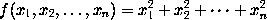
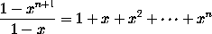

Ellipsis (three dots) is produced in mathematics mode using
the control sequences \ldots (for dots aligned
with tbe baseline of text), and \cdots (for dots
aligned with the centreline of mathematical formulae). Thus
the formula
is obtained by typing
Similarly the formula\[ f(x_1, x_2,\ldots, x_n) = x_1^2 + x_2^2 + \cdots + x_n^2 \]
is produced using
\cdots, by typing
\[ \frac{1 - x^{n+1}}{1 - x} = 1 + x + x^2 + \cdots + x^n \]